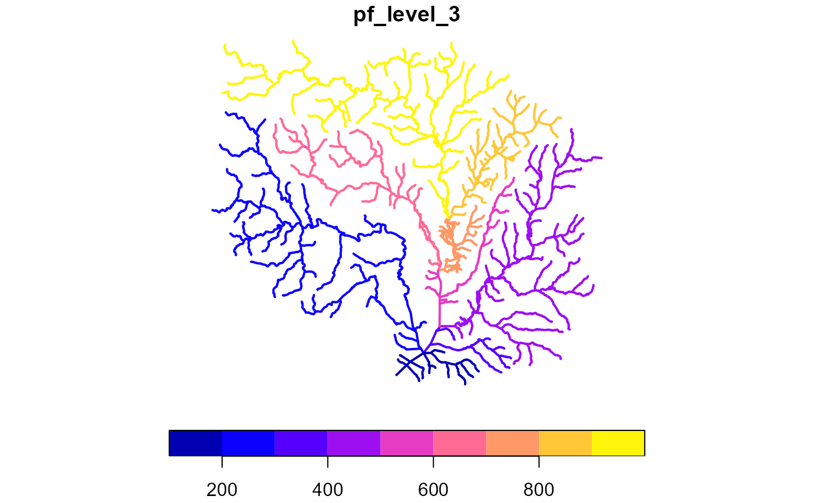
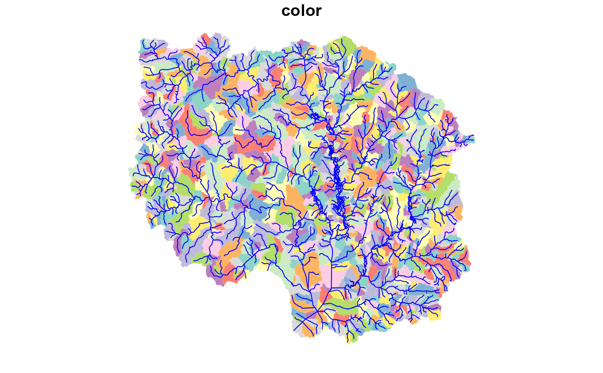
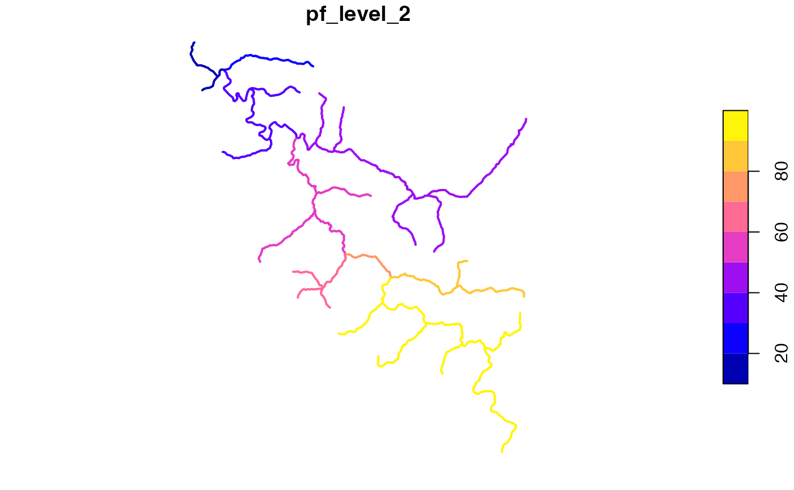

Determines Pfafstetter codes for a dendritic network with total drainage area, levelpath, and topo_sort attributes.
get_pfaf(x, max_level = 2, status = FALSE)
| x | sf data.frame with ID, toID, totda, outletID, topo_sort, and levelpath attributes. |
|---|---|
| max_level | integer number of pfaf levels to attempt to calculate. If the network doesn't have resolution to support the desired level, unexpected behavior may occur. |
| status | boolean print status or not |
data.frame with ID and pfaf columns.
get_pfaf,Get Pfafstetter Codes (Experimental),Get Pfafstetter Codes (Experimental) — get_pfaf,Source:R/get_codes.R,get_pfaf.Rd,character(0),get_pfaf,character(0),list(title = "Description", contents = "Determines Pfafstetter codes for a dendritic network with\ntotal drainage area, levelpath, and topo_sort attributes.
"),list(image = list(src = "https://usgs-r.github.io/nhdplusTools/logo.png"), description = "Determines Pfafstetter codes for a dendritic network with\ntotal drainage area, levelpath, and topo_sort attributes."),get_pfaf(x, max_level = 2, status = FALSE),list(list(name = "x", description = "sf data.frame with ID, toID, totda, outletID, topo_sort,\nand levelpath attributes.
"), list(name = "max_level", description = "integer number of pfaf levels to attempt to calculate.\nIf the network doesn't have resolution to support the desired level,\nunexpected behavior may occur.
"), list(name = "status", description = "boolean print status or not
")),TRUE,# \donttest{ library(dplyr) source(system.file("extdata/nhdplushr_data.R", package = "nhdplusTools")) hr_flowline <- align_nhdplus_names(hr_data$NHDFlowline) fl <- select(hr_flowline, COMID, AreaSqKM) %>% right_join(prepare_nhdplus(hr_flowline, 0, 0, purge_non_dendritic = FALSE, warn = FALSE), by = "COMID") %>% sf::st_sf() %>% select(ID = COMID, toID = toCOMID, area = AreaSqKM) fl$nameID = "" fl$totda <- calculate_total_drainage_area(sf::st_set_geometry(fl, NULL)) fl <- left_join(fl, get_levelpaths(rename(sf::st_set_geometry(fl, NULL), weight = totda)), by = "ID") pfaf <- get_pfaf(fl, max_level = 3) fl <- left_join(fl, pfaf, by = "ID") plot(fl["pf_level_3"], lwd = 2)pfaf <- get_pfaf(fl, max_level = 4) hr_catchment <- left_join(hr_data$NHDPlusCatchment, pfaf, by = c("FEATUREID" = "ID")) colors <- data.frame(pf_level_4 = unique(hr_catchment$pf_level_4), color = sample(terrain.colors(length(unique(hr_catchment$pf_level_4)))), stringsAsFactors = FALSE) hr_catchment <- left_join(hr_catchment, colors, by = "pf_level_4") plot(hr_catchment["color"], border = NA, reset = FALSE)source(system.file("extdata", "walker_data.R", package = "nhdplusTools")) fl <- select(walker_flowline, COMID, AreaSqKM) %>% right_join(prepare_nhdplus(walker_flowline, 0, 0, purge_non_dendritic = FALSE, warn = FALSE), by = "COMID") %>% sf::st_sf() %>% select(ID = COMID, toID = toCOMID, area = AreaSqKM) fl$nameID = "" fl$totda <- calculate_total_drainage_area(sf::st_set_geometry(fl, NULL)) fl <- left_join(fl, get_levelpaths(rename(sf::st_set_geometry(fl, NULL), weight = totda)), by = "ID") pfaf <- get_pfaf(fl, max_level = 2) fl <- left_join(fl, pfaf, by = "ID") plot(fl["pf_level_2"], lwd = 2)# },list(list(title = "Value", contents = "data.frame with ID and pfaf columns.
", slug = "value")),2021,list(name = "nhdplusTools", version = "0.4.1", authors = "David Blodgett"),list(destination = "dev", mode = "release", version_label = "default", version_tooltip = "Released version", in_dev = FALSE),list(root = "../", title = "nhdplusTools"),list(),list(type = "default", left = "